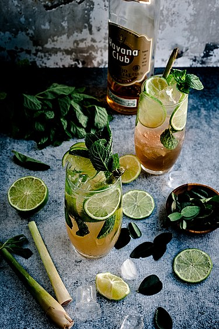

Mojito (/moʊˈhiːtoʊ/; Spanish: [moˈxito]) is a traditional Cuban punch. The cocktail often consists of five ingredients: white rum, sugar (traditionally sugar cane juice), lime juice, soda water, and mint.[1][2] Its combination of sweetness, citrus, and herbaceous mint flavors is intended to complement the rum, and has made the mojito a popular summer drink.
